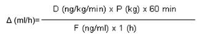

RÉSUMÉ DES CARACTÉRISTIQUES DU PRODUIT
ANSM - Mis à jour le : 07/02/2013
EPOPROSTENOL ARROW 0,5 mg, poudre et solvant pour solution injectable
2. COMPOSITION QUALITATIVE ET QUANTITATIVE
Epoprosténol sodique .................................................................................................................... 0,531 mg
Quantité correspondant à époprosténol ............................................................................................ 0,500 mg
Pour un flacon.
Excipient: contient du sodium.
Pour la liste complète des excipients, voir rubrique 6.1.
Poudre et solvant pour solution injectable.
4.1. Indications thérapeutiques
EPOPROSTENOL ARROW 0,5 mg, poudre et solvant pour solution injectable est indiqué dans le traitement au long cours, en perfusion continue, de l'hypertension artérielle pulmonaire (HTAP):
· hypertension artérielle pulmonaire idiopathique - familiale ou sporadique,
· hypertension artérielle pulmonaire associée à une collagénose systémique.
Chez les patients en stade clinique fonctionnel III ou IV (de l'échelle de sévérité de New York Heart Association).
A titre indicatif, avant d'envisager la mise en route d'un traitement au long cours par EPOPROSTENOL ARROW 0,5 mg, poudre et solvant pour solution injectable, les patients potentiellement répondeurs aux vasodilatateurs oraux pourront être identifiés par un test de vasodilatation en aigu qui sera au mieux réalisé à l'aide du monoxyde d'azote par voie inhalée.
EPOPROSTENOL ARROW 0,5 mg, poudre et solvant pour solution injectable ne doit être prescrit que dans des services spécialisés en pneumologie disposant d'une unité de soins intensifs et d'une unité d'exploration cardiologique invasive afin d'assurer un bilan spécialisé et la surveillance par une équipe formée à la prise en charge des patients atteints d'hypertension artérielle pulmonaire et à l'utilisation d'EPOPROSTENOL ARROW 0,5 mg, poudre et solvant pour solution injectable.
4.2. Posologie et mode d'administration
Posologie préconisée chez l'adulte:
· Test de vasodilatation en aigu:
Ce test n'a pour seul intérêt que de dépister les patients répondeurs aux vasodilatateurs oraux (tels que les inhibiteurs calciques) et en aucun cas les répondeurs à l'époprosténol en administration au long cours (dont l'indication ne se justifie que chez des sujets non répondeurs au test en aigu). Il peut aisément être remplacé par un test au monoxyde d'azote (NO) inhalé, plus simple et sans retentissement systémique.
Le produit pourra être administré soit par voie périphérique soit par voie centrale.
La perfusion sera débutée à raison de 2 ng/kg/min, puis augmentée par paliers de 2 ng/kg/min toutes les 15 minutes ou moins fréquemment, jusqu'à l'apparition d'effets pharmacologiques limitants dont les plus fréquents sont des nausées, des vomissements, des céphalées, une hypotension ou une tachycardie.
A titre indicatif, au cours des essais cliniques, la dose maximale administrée en aigu n'entraînant pas de tels effets a été en moyenne de 8,6 ± 0,3 ng/kg/min.
· Perfusion continue au long cours:
Pour une perfusion au long cours, le produit dilué sera administré au moyen d'un cathéter veineux central.
Le débit de perfusion d'époprosténol sera ajusté sous contrôle médical.
o Dose initiale:
La perfusion sera débutée à raison de 1 ng/kg/min puis augmentée par palier de 1 ng/kg/min toutes les 12 à 24 heures selon la tolérance, jusqu'à une posologie de 10 ng/kg/min. La posologie sera ensuite augmentée de 1 ng/kg/min tous les 15 jours jusqu'à la dose de 16 ng/kg/min.
o Ajustement des doses perfusées lors du traitement au long cours:
Les doses d'époprosténol seront augmentées en fonction des récidives ou des aggravations des symptômes de l'hypertension artérielle pulmonaire, sur l'objectivation d'une baisse de la tolérance à l'exercice sur les tests de marche (6 min) répétés et sur les paramètres hémodynamiques.
La survenue d'évènements indésirables liés à un surdosage devra faire envisager la diminution de doses d'époprosténol.
o Modalités et conditions d'augmentation de la dose lors de la perfusion au long cours:
Les symptômes de l'hypertension artérielle pulmonaire peuvent revenir graduellement en cours de traitement. En général, ils répondent bien à de faibles augmentations de dose d'époprosténol.
Lorsque les signes d'hypertension artérielle pulmonaire se majorent, la dose perfusée sera augmentée par paliers de 1 ng/kg/min en respectant des intervalles de temps suffisamment longs (1 à 4 semaines) pour permettre l'évaluation de la réponse clinique.
Les débits de perfusion doivent être réévalués à intervalles réguliers. A titre indicatif, lors des essais cliniques, l'augmentation de la dose a été en moyenne de 1 ng/kg/min par mois, mais la variabilité était considérable.
o Modalités et conditions de diminution de la dose lors de la perfusion au long cours:
La survenue de signes cliniques témoignant d'un surdosage ou d'une élévation trop importante du débit cardiaque (dyspnée, fatigue, perte de poids, tachycardie, vomissements…) peut obliger à réduire la dose d'époprosténol perfusé. Ce phénomène disparaît parfois sans ajustement de posologie et il est souvent difficile de différencier ces symptômes de signes évoquant une insuffisance de traitement, d'où la nécessité d'une surveillance clinique et hémodynamique.
La diminution de dose doit se faire progressivement, par paliers de 2 ng/kg/min, toutes les 15 minutes ou plus, jusqu'à disparition des effets limitants en rapport avec la dose administrée.
|
La diminution de dose doit se faire progressivement par paliers. L'interruption brusque de la perfusion d'époprosténol ou une réduction importante et/ou brutale du débit de perfusion doivent être évitées en raison du risque de survenue d'effet rebond pouvant menacer le pronostic vital. |
· Utilisation chez le sujet âgé:
Les études cliniques menées avec EPOPROSTENOL ARROW 0,5 mg, poudre et solvant pour solution injectable n'ont pas inclu un effectif suffisant de patients âgés de plus de 65 ans pour déterminer si, chez eux, l'efficacité et la tolérance d'EPOPROSTENOL ARROW 0,5 mg, poudre et solvant pour solution injectable différaient de celles observées chez des sujets plus jeunes.
Néanmoins, dans cette population, le choix d'une posologie doit être prudent, en raison d'un plus grand risque de dysfonctionnement hépatique, rénal, cardiaque, ainsi que de pathologies ou de traitements associés.
Chez l'enfant: en l'absence de donnée suffisante concernant le traitement de l'HTAP de l'enfant par EPOPROSTENOL ARROW 0,5 mg, poudre et solvant pour solution injectable, il appartient au médecin de peser le bénéfice escompté du traitement par EPOPROSTENOL ARROW 0,5 mg, poudre et solvant pour solution injectable et le risque encouru par le patient en l'absence de ce traitement.
Chez le nouveau né: en l'absence de donnée suffisante concernant le traitement du nouveau né par EPOPROSTENOL ARROW 0,5 mg, poudre et solvant pour solution injectable, il appartient au médecin de peser le bénéfice escompté d'EPOPROSTENOL ARROW 0,5 mg, poudre et solvant pour solution injectable face au risque encouru par le patient en l'absence de ce traitement et aux alternatives thérapeutiques existantes.
Mode d'administration:
Perfusion intraveineuse.
Pour une perfusion intraveineuse au long cours, EPOPROSTENOL ARROW 0,5 mg, poudre et solvant pour solution injectable sera administré via un cathéter central à l'aide d'une pompe pour perfusion ambulatoire.
· La pompe ambulatoire doit:
o être de petite taille et de faible poids;
o permettre des ajustements de débit par palier de 1 ng/kg/min;
o posséder une alarme pour les obstructions, les fins de perfusion et le déchargement de la pile;
o permettre une précision d'au moins 6 % par rapport au débit programmé;
o fonctionner par pression positive (continue ou pulsatile); l'intervalle entre les poussées ne doit pas dépasser 3 minutes aux débits utilisés pour l'administration d'EPOPROSTENOL ARROW 0,5 mg, poudre et solvant pour solution injectable.
Le réservoir doit être en chlorure de polyvinyle, en polypropylène ou en verre.
A titre indicatif, les pompes à perfusion utilisées au cours des essais cliniques ont été les suivantes: CADD-1 HFX 5 100 (Pharmacia Deltec), Walk-Med 410 C (Medfusion, Inc.) et AutSyringe AS2F (Baxter Healthcare) et Graseby MS32.
Afin d'éviter d'éventuelles interruptions dans l'administration du médicament, le patient doit pouvoir avoir accès à une pompe de secours et à un matériel pour perfusion intraveineuse.
Les solutions d'EPOPROSTENOL ARROW 0,5 mg, poudre et solvant pour solution injectable ne devant pas être mélangées avec d'autres solutés, un cathéter à plusieurs lumières doit être utilisé si d'autres traitements intraveineux sont administrés régulièrement.
· Préparation d'une solution d'EPOPROSTENOL ARROW 0,5 mg, poudre et solvant pour solution injectable pour perfusion:
Les solutions reconstituées, préparées en temps réel, ne doivent pas être utilisées sur plus de 12 heures lorsqu'elles sont administrées à température ambiante (entre 15°C et 25°C). Elles ne doivent pas être exposées à des températures supérieures à 25°C et doivent être maintenues à l'abri de la lumière.
Avant utilisation à température ambiante, les solutions reconstituées d'EPOPROSTENOL ARROW 0,5 mg, poudre et solvant pour solution injectable peuvent être stockées au réfrigérateur entre 2°C et 8°C pour une durée qui ne saurait excéder 40 heures. Dans ce cas, elles ne doivent pas être utilisées ensuite sur plus de 8 heures lorsqu'elles sont administrées à température ambiante.
Avant administration, la solution reconstituée sera inspectée. Une décoloration ou la présence de particules doit interdire son administration.
· Calcul du débit de perfusion:
Le débit de perfusion Δ (ml/h) sera calculé au moyen de la formule suivante:

D représente la dose prescrite d'époprosténol exprimée en ng/kg/min.
P représente le poids corporel du patient exprimé en kg.
F représente la concentration d'époprosténol exprimée en ng/ml et calculée sur la base de la formule suivante:
F (ng/ml) = Q (ng)/VD (ml) où VD représente le volume de dilution du solvant exprimé en ml et Q la quantité d'époprosténol exprimée en ng.
A titre indicatif, les concentrations (F) d'époprosténol les plus fréquemment utilisées dans le traitement de l'HTAPP sont:
o 10 000 ng/ml = 1 flacon dosé à 0,5 mg d'époprosténol, reconstitué et dilué dans 50 ml;
o 20 000 ng/ml = 2 flacons dosés à 0,5 mg d'époprosténol, reconstitués et dilués dans 50 ml;
o 30 000 ng/ml = 3 flacons dosés à 0,5 mg d'époprosténol ou 1 flacon dosé à 1,5 mg d'époprosténol, reconstitués et dilués dans 50 ml;
o 40 000 ng/ml = 4 flacons dosés à 0,5 mg d'époprosténol ou 1 flacon dosé à 1,5 mg d'époprosténol + 1 flacon dosé à 0,5 mg d'époprosténol, reconstitués et dilués dans 50 ml.
Ce médicament est contre-indiqué:
· en cas d'hypersensibilité à l'époprosténol ou à l'un des excipients;
· chez les patients ayant une insuffisance cardiaque congestive due à un dysfonctionnement sévère du ventricule gauche;
· en cas de suspicion de maladie veino-occlusive sur les données de l'anamnèse, de l'examen clinique, de la tomodensitométrie thoracique, et du lavage broncho-alvéolaire, ou en cas de survenue d'un œdème pulmonaire (clinique ou radiologique) lors de la mise en route du traitement par époprosténol.
4.4. Mises en garde spéciales et précautions d'emploi
Conditions d'initiation du traitement:
Le traitement par EPOPROSTENOL ARROW 0,5 mg, poudre et solvant pour solution injectable sera initié lorsque le diagnostic des pathologies suivantes aura été éliminé au préalable:
· hypertension pulmonaire liée à des pathologies du cœur gauche,
· hypertension pulmonaire secondaire aux maladies respiratoires chroniques et/ou à une hypoxémie,
· hypertension pulmonaire d'origine thromboembolique chronique.
EPOPROSTENOL ARROW 0,5 mg, poudre et solvant pour solution injectable doit être reconstitué comme indiqué plus haut en utilisant uniquement le solvant stérile d'accompagnement. Ce solvant ne contenant pas de conservateur, il devra être utilisé en une seule fois. Tout solvant inutilisé sera jeté. EPOPROSTENOL ARROW 0,5 mg, poudre et solvant pour solution injectable ne doit pas être reconstitué ou mélangé avec aucune autre médication ou solution pour usage parentéral.
La décision d'entreprendre un traitement par EPOPROSTENOL ARROW 0,5 mg, poudre et solvant pour solution injectable doit prendre en considération la probabilité élevée de devoir maintenir le traitement intraveineux pendant une longue période, éventuellement plusieurs années. Ainsi, il convient d'évaluer soigneusement l'aptitude du patient à accepter et surveiller un cathéter et une pompe de perfusion à demeure. Les risques inhérents aux cathéters veineux centraux devront être prévenus et il conviendra de prévoir des précautions d'asepsie strictes lors des manipulations.
EPOPROSTENOL ARROW 0,5 mg, poudre et solvant pour solution injectable est un puissant vasodilatateur pulmonaire et systémique.
EPOPROSTENOL ARROW 0,5 mg, poudre et solvant pour solution injectable est un puissant inhibiteur de l'agrégation plaquettaire. Par conséquent, un risque accru de complications hémorragiques devra être pris en considération, en particulier pour les patients ayant d'autres facteurs de risque de saignement (voir rubrique 4.5).
L'ajustement posologique de ce médicament doit se faire dans un milieu doté d'un personnel suffisant et d'équipements nécessaires pour une surveillance intensive et des soins de réanimation adaptés. Après un ajustement de posologie, il est recommandé de surveiller la fréquence cardiaque et la pression artérielle en position debout et couchée pendant plusieurs heures.
L'apparition d'une hypotension excessive pendant l'administration d'EPOPROSTENOL ARROW 0,5 mg, poudre et solvant pour solution injectable nécessite une réduction de la posologie voire l'arrêt de la perfusion. Un surdosage en époprostenol peut induire une hypotension profonde et entraîner une perte de connaissance. La diminution ou l'arrêt du traitement par EPOPROSTENOL ARROW 0,5 mg, poudre et solvant pour solution injectable devront être réalisés sous surveillance médicale. L'arrêt brutal doit être évité, sauf dans les situations menaçant le pronostic vital (ex: collapsus..). Un arrêt brutal (notamment une panne du système d'administration ou une réduction importante et soudaine des doses d'EPOPROSTENOL ARROW 0,5 mg, poudre et solvant pour solution injectable) peut provoquer un rebond de l'hypertension pulmonaire se manifestant par des étourdissements, une asthénie et une augmentation de la dyspnée, et pouvant conduire au décès.
Ce médicament contient du sodium. Le taux de sodium est inférieur à 1 mmol par dose administrée, c'est à dire « sans sodium ».
4.5. Interactions avec d'autres médicaments et autres formes d'interactions
Associations à prendre en compte
+ Diurétiques, antihypertenseurs ou autres vasodilatateurs tels que les inhibiteurs calciques ou les inhibiteurs de l'enzyme de conversion:
Majoration du risque d'hypotension.
+ Anti-agrégants plaquettaires, anticoagulants ou anti-inflammatoires non stéroïdiens:
Majoration du risque de saignement.
Les études de reproduction réalisées chez le rat et le lapin, en bolus par voie S.C. n'ont pas mis en évidence d'effet tératogène de l'époprosténol, ni d'effet sur la fertilité. Toutefois, aucune étude de reproduction n'a été effectuée en perfusion intraveineuse continue.
Une contraception est préférable pendant le traitement par EPOPROSTENOL ARROW 0,5 mg, poudre et solvant pour solution injectable.
Chez la femme enceinte, il n'existe pas d'étude adéquate contrôlée. EPOPROSTENOL ARROW 0,5 mg, poudre et solvant pour solution injectable ne doit être utilisé chez la femme enceinte que si les bénéfices attendus contrebalancent les risques potentiels pour le fœtus.
Travail et accouchement: que ce soit pendant le travail ou l'accouchement par voie vaginale ou par césarienne, l'utilisation d'EPOPROSTENOL ARROW 0,5 mg, poudre et solvant pour solution injectable n'a pas fait l'objet d'études adéquates.
En l'absence de données concernant le passage d'EPOPROSTENOL ARROW 0,5 mg, poudre et solvant pour solution injectable dans le lait maternel, l'allaitement est déconseillé lors du traitement par ce médicament.
4.7. Effets sur l'aptitude à conduire des véhicules et à utiliser des machines
Sans objet.
Les effets indésirables rapportés sont classés ci-dessous par classe d'organe. Les fréquences sont définies comme: très fréquent (> 1/10), fréquent (> 1/100, < 1/10), peu fréquent (> 1/1 000, < 1/100), rare (> 1/10 000, < 1/1 000), très rare (< 1/10 000), y compris les cas isolés.
Les évènements mentionnés avec une fréquence indéterminée correspondent à ceux rapportés par notification spontanée depuis la commercialisation.
Infections et infestations
Fréquent: Sepsis, septicémie.
Affections hématologiques et du système lymphatique
Fréquent: Thrombopénies, saignements divers.
Troubles du métabolisme et de la nutrition
Fréquence indéterminée:
Augmentation de la glycémie.
Affections psychiatriques
Fréquent: Anxiété, nervosité.
Fréquence indéterminée: Agitation.
Affections du système nerveux
Très fréquent: Céphalées.
Affections cardiaques
Fréquent: Tachycardie (des cas ont été rapportés en réponse à l'administration d'époprosténol à des doses ≤ à 5 nanogrammes/kg/min).
Bradycardie, parfois accompagnée d'hypotension orthostatique, des cas se sont produits chez des volontaires sains à des doses > à 5 nanogrammes/kg/min.
Hypotension.
Affections vasculaires
Très fréquent: flush facial.
Affections gastro-intestinales
Très fréquent: Nausée, vomissement, diarrhée.
Fréquent: Colique abdominale, parfois rapportée comme une gêne abdominale.
Affections de la peau et du tissu sous-cutané
Fréquent: Eruption cutanée.
Fréquence indéterminé: Photosensibilité.
Affections musculo-squelettiques et systémiques
Très fréquent: Douleur de la mâchoire.
Fréquent: Arthralgie.
Fréquence indéterminée: Douleurs des membres inférieurs.
Troubles généraux et anomalies au site d'administration
Très fréquent: Douleur (site non précisé)
Fréquent: Œdèmes des membres inférieurs souvent associés à une ascite dont l'origine n'est pas toujours clairement établie, douleur thoracique, douleur au site d'injection.
Rare: Infection locale.
Très rare: Oppression thoracique, rougeur au niveau du site d'administration, occlusion du cathéter intraveineux, sensation de lassitude.
Fréquence indéterminée: Syndrome pseudo-grippal, gêne respiratoire, étourdissement, vertige.
En général, les symptômes d'un surdosage en époprosténol consistent en une exagération des effets pharmacologiques du médicament, à savoir: flush, tachycardie, hypotension, céphalées, nausées, vomissements et diarrhées.
Conduite à tenir: traitement symptomatique et réduction progressive de la posologie d'EPOPROSTENOL ARROW 0,5 mg, poudre et solvant pour solution injectable. Il peut être nécessaire d'interrompre la perfusion d'EPOPROSTENOL ARROW 0,5 mg, poudre et solvant pour solution injectable et d'envisager dans certains cas un remplissage vasculaire et/ou un ajustement du débit de la pompe.
5. PROPRIETES PHARMACOLOGIQUES
5.1. Propriétés pharmacodynamiques
VASODILATATEURS/AUTRES VASODILATATEURS.
(C: SYSTEME CARDIO-VASCULAIRE).
Code ATC: C01D.
L'époprosténol est une prostacycline. Elle a deux actions pharmacologiques principales: vasodilatation directe des lits vasculaires artériels pulmonaires et systémiques, et inhibition de l'agrégation plaquettaire.
Chez l'animal, les effets vasodilatateurs réduisent la post-charge des ventricules droit et gauche tout en augmentant le débit cardiaque et le volume d'éjection systolique. Chez l'animal, l'effet de l'époprosténol sur le rythme cardiaque dépend de la dose. A faible dose, on observe une bradycardie d'origine vagale. Mais à plus fortes doses, il apparaît une tachycardie réflexe en réponse à la vasodilatation directe et à l'hypotension. Il n'a pas été observé d'effet notable sur la conduction cardiaque.
D'autres actions pharmacologiques ont été mises en évidence chez l'animal: bronchodilatation, inhibition de la sécrétion d'acide gastrique et réduction de la vidange gastrique.
Un effet bénéfique du EPOPROSTENOL ARROW 0,5 mg, poudre et solvant pour solution injectable a pu être observé en pratique clinique dans les hypertensions artérielles pulmonaires associées à un shunt cardiaque gauche-droit, une hypertension portale, une infection par le VIH ou à la prise de certaines substances toxiques et médicamenteuses. Cependant, les données sont limitées pour documenter l'utilisation d'EPOPROSTENOL ARROW 0,5 mg, poudre et solvant pour solution injectable dans ces situations cliniques.
5.2. Propriétés pharmacocinétiques
A pH neutre, l'époprosténol est rapidement hydrolysé dans le sang, tout en subissant une dégradation enzymatique. Les études chez l'animal, à fortes doses, ont montré une clairance élevée (93 ml/min/kg), un faible volume de distribution (357 ml/kg) et une demi-vie très brève (2,7 min). Lors de perfusions chez l'animal, l'état d'équilibre pour les concentrations plasmatiques d'époprosténol au tritium marqué est atteint en 15 minutes; il se prolonge en proportion avec le débit de perfusion.
Il n'existe pas actuellement de méthode de sensibilité et de spécificité suffisante pour évaluer in vivo la pharmacocinétique de l'époprosténol chez l'Homme.
In vitro, la demi-vie de l'époprosténol dans le sang humain est d'environ 6 minutes à la température de 37°C et au pH de 7,4. Sur la base de l'inhibition de l'agrégation plaquettaire, la demi-vie fonctionnelle de l'époprosténol a été évaluée à 10,6 minutes chez l'homme et à 10,8 minutes chez la femme.
De l'époprosténol au tritium marqué a été administré chez l'homme afin d'en identifier les métabolites. L'époprosténol est d'abord transformé en deux métabolites principaux: le 6 -céto-PGF1α (formé par dégradation spontanée) et le 6,15-dicéto-13, 14-dihydro-PGF1 α (formé par dégradation enzymatique). Sur les modèles animaux de référence, ces deux métabolites ont une activité pharmacologique inférieure à celle de l'époprosténol. Après une semaine, 82 % et 4 % de la dose radioactive administrée sont retrouvés respectivement dans les urines et dans les fèces. Quatorze autres métabolites mineurs ont été identifiés dans les urines, attestant d'une métabolisation importante de l'époprosténol chez l'homme.
5.3. Données de sécurité préclinique
Pouvoir mutagène: l'époprosténol ne s'est pas montré mutagène lors du test sur micronucléus chez le rat, lors du test d'Ames et du test d'élution de l'A.D.N.
Pouvoir carcinogène: le pouvoir carcinogène de l'EPOPROSTENOL ARROW 0,5 mg, poudre et solvant pour solution injectable n'a pas été étudié.
Pouvoir tératogène: l'époprosténol administré par voie sous-cutanée pendant les périodes critiques de l'organogenèse ne s'est pas révélé tératogène chez la rate ou la lapine.
Néanmoins, la durée moyenne de gestation est apparue significativement allongée chez des rates gestantes. La parturition et le nursing des portées n'ont pas été modifiés.
Flacon de poudre: glycine, chlorure de sodium, mannitol, hydroxyde de sodium.
Flacon de solvant: glycine, chlorure de sodium, hydroxyde de sodium, eau pour préparations injectables.
La stabilité des solutions d'EPOPROSTENOL ARROW 0,5 mg, poudre et solvant pour solution injectable est pH dépendante. Pour cette raison, EPOPROSTENOL ARROW 0,5 mg, poudre et solvant pour solution injectable ne doit être reconstitué qu'avec le solvant stérile d'accompagnement. Une fois reconstituées, les solutions d'EPOPROSTENOL ARROW 0,5 mg, poudre et solvant pour solution injectable ne doivent être ni diluées, ni administrées avec d'autres solutions ou médications à usage parentéral.
Après première reconstitution :
La stabilité physico-chimique de la solution reconstituée a été démontrée pendant 12h à 25°C et 40h à une température ne dépassant pas 5°C.
Toutefois du point de vue microbiologique, le produit doit être utilisé immédiatement. En cas d’utilisation non immédiate, les durées et conditions de conservation après reconstitution et avant utilisation relèvent de la seule responsabilité de l’utilisateur et ne devraient pas dépasser 24 heures à une température comprise entre 2°C et 8°C.
6.4. Précautions particulières de conservation
A conserver à une température ne dépassant pas 25°C, à l'abri de la lumière et de l'humidité.
Ne pas congeler les solutions reconstituées d'EPOPROSTENOL ARROW 0,5 mg, poudre et solvant pour solution injectable.
Jeter toute solution reconstituée préalablement congelée.
6.5. Nature et contenu de l'emballage extérieur
Poudre en flacon (verre de type I).
50 ml de solvant en flacon (verre de type I).
Filtre.
Toutes les présentations peuvent ne pas être commercialisées.
6.6. Précautions particulières d’élimination et de manipulation
Pas d'exigences particulières.
7. TITULAIRE DE L’AUTORISATION DE MISE SUR LE MARCHE
ARROW GENERIQUES
26 AVENUE TONY GARNIER
69007 LYON
8. NUMERO(S) D’AUTORISATION DE MISE SUR LE MARCHE
· 578 012-6 ou 34009 578 012 6 7: poudre en flacon (verre) + 1 flacon (verre) de 50 ml de solvant + filtre.
· 578 013-2 ou 34009 578 013 2 8: poudre en flacon (verre) + 2 flacons (verre) de 50 ml de solvant + filtre.
9. DATE DE PREMIERE AUTORISATION/DE RENOUVELLEMENT DE L’AUTORISATION
[à compléter par le titulaire]
10. DATE DE MISE A JOUR DU TEXTE
[à compléter par le titulaire]
Sans objet.
12. INSTRUCTIONS POUR LA PREPARATION DES RADIOPHARMACEUTIQUES
Sans objet.
Liste I.
Médicament soumis à prescription hospitalière réservée aux spécialistes et/ou aux services spécialisés en pneumologie ou en cardiologie.